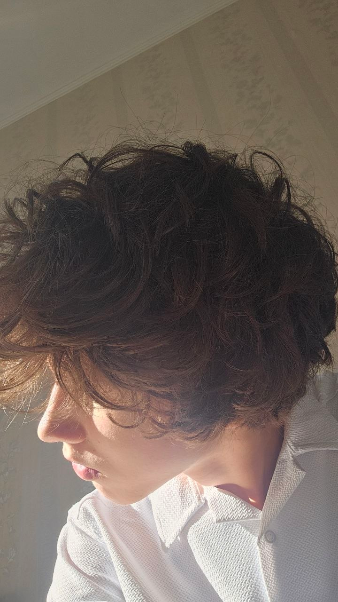
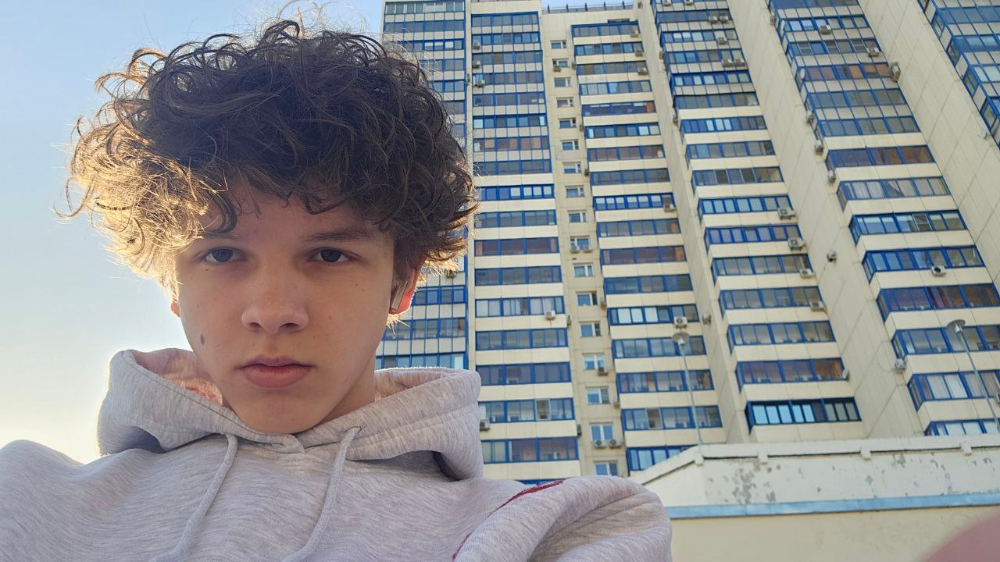
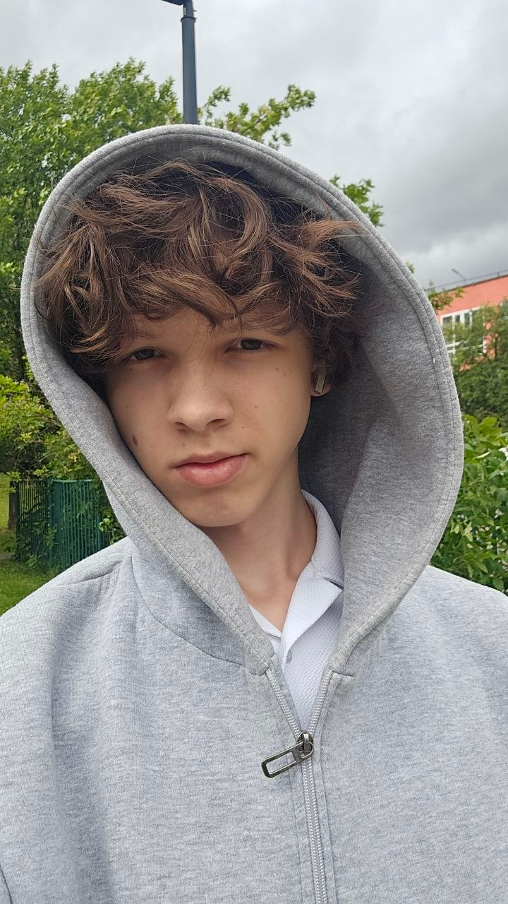
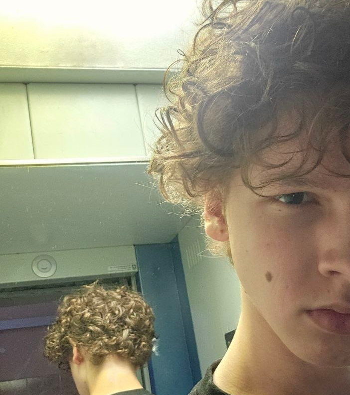
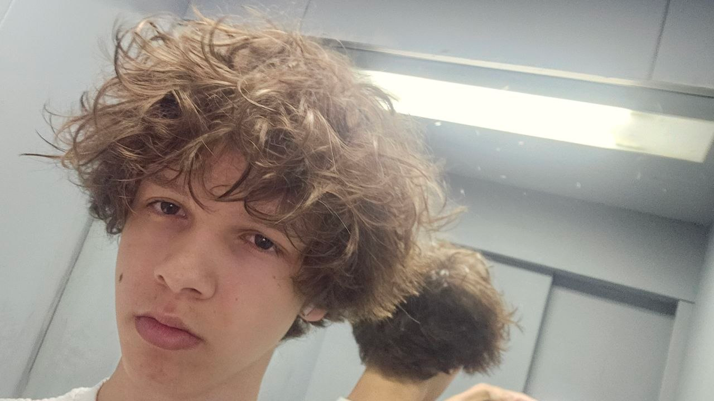
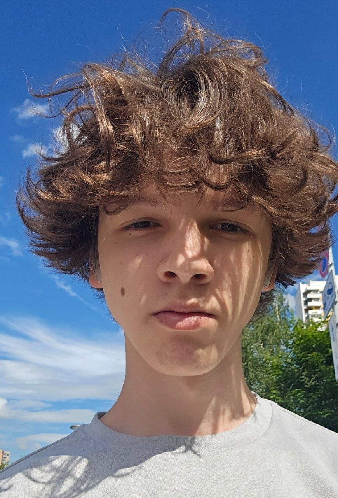

Личная биография
Делаю шаги
к своей мечте.
Меня зовут Максим.
Я школьник и начинающий веб-разработчик. Создаю сайты на заказ и каждый день стараюсь становиться сильнее в своём деле. Моя цель — развиваться в веб-разработке и однажды собрать большую аудиторию на Twitch.
Спорт помогает мне держать темп: я хожу в зал, плаваю, много гуляю и стараюсь проходить не меньше 10 000 шагов. Люблю велосипедные поездки на 20–100 километров — дорога помогает проветрить голову и оставить лишние мысли позади.
Учусь, самостоятельно занимаюсь английским и собираю знания о спорте, отношениях и саморазвитии. Всё это учит меня дисциплине, которую я переношу и в работу.



Спорт, прогулки, велосипед и работа над собой помогают мне сохранять ясную голову и двигаться дальше.


